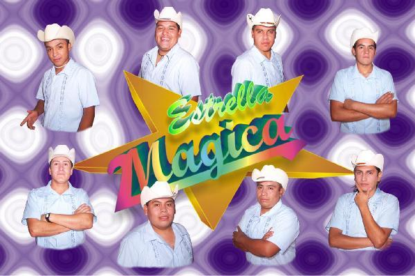
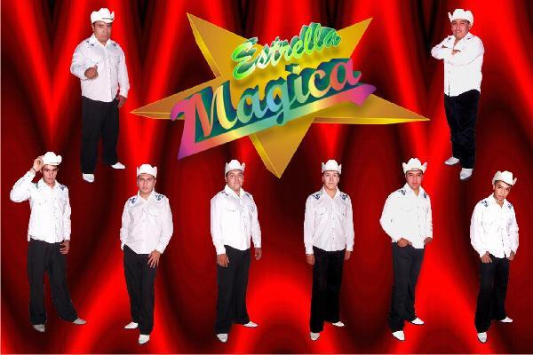
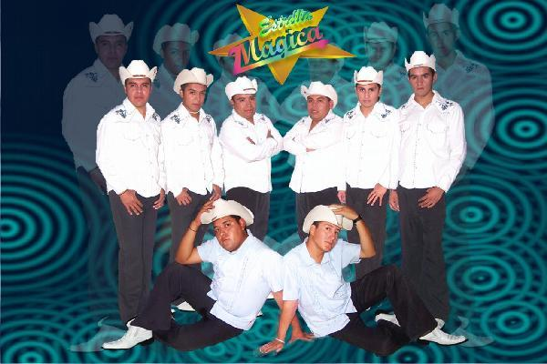
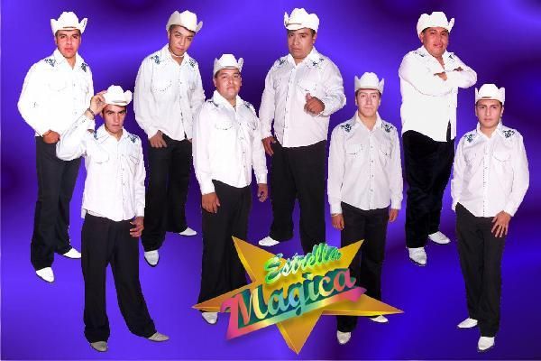

Música

En Vivo
1.- Al Compas
2.- 25 Horas
3.- Cruz de palo
4.- Mix Pequeños Musical

Hotel california
1.- Hotel California
2.- Actos de un tonto
3.- El caminante
4.- Eres divina

Cuidala
1.- Cuidala
2.- Ultimas noticias
3.- Ayer hable con mi orgullo
4.- Piel de angel

Falsa traición
1.- Falsa traición
2.- Gracias por todo
3.- Buena suerte
4.- La güera pachangera